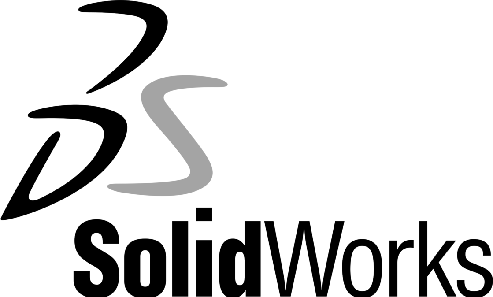

I’m an experienced Aerospace Engineer with a solid track record in both industry
and academia. My passion lies in Aircraft Conceptual Design and Aerodynamics,
with a dedicated focus on fixed-wing drones. What sets me apart is a rare
combination of theoretical knowledge and sharp design intuition combine with
hands-on experience—taking projects from sketchpad all the way to complete
composite prototype.
